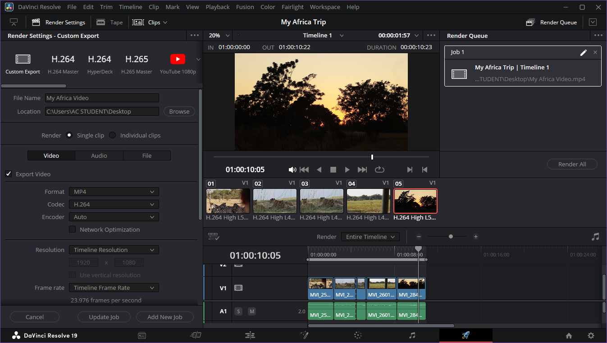
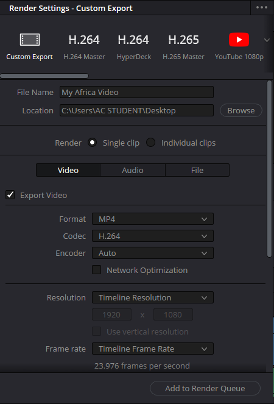
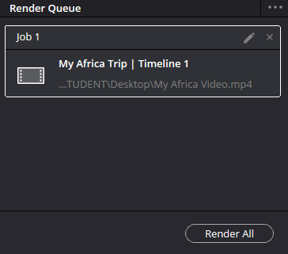

Use the Deliver Page
Overview
Use the Deliver Page to export your videos. Set the video quality and format with the Render Settings panel.

Procedure: Configure your render settings
- Select a render preset, for example, YouTube 1080p, or set up a custom export.
- Enter a file name and choose where to save your video.
- Choose your video format, resolution, and frame rate.
- Select Add to Render Queue.

Procedure: Export your video
- Locate the render job in the Render Queue panel
- Select Render All and wait for your video to render

Tips
Preview your video from start to finish before you export.
Looking for your rendered video? The default save location is your DaVinci Resolve project folder.
Recommended export settings
Video:
- Format: MP4
- Codec: H.265 (or H.264 for older devices)
- Resolution: Timeline Resolution
- Frame rate: Timeline Frame Rate
- Quality: High (or Medium for long-form content)
- Frame reordering: enable for H.265, disable for H.264
Audio:
- Codec: AAC
- Track Data Rate: 320 Kb/s